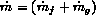
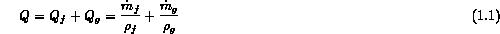
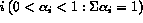
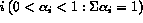
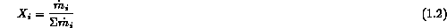
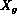
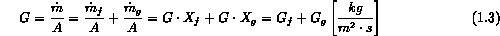
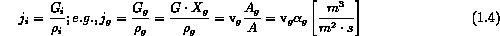
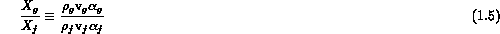

To model multi-phase flows one is sometimes required to describe properties averaged over the phase both spatially and temporally. A certain familiarity is required with these definitions before we discuss specific phenoma. The multiple phases (and/or components) are usually distinguished by numerical subscripts (1,2...) or for two-phases by subscripts f and g for a liquid-gas system of f and s for a liquid-solid system. (The second phase, component, is usually chosen as the dispersed phase.) For illustration, consider a two-phase air-water flow in a vertical pipe. The total mass flow rate is  with volumetric flowrate given by

Every part of the multiphase flow is occupied by one phase or another. One can consider the symbol  , as the fraction of an element of volume which is occupied over some time interval by phase i. Obviously, if the volume element and the time interval is chosen to be small enough (infinitesimal)
, as the fraction of an element of volume which is occupied over some time interval by phase i. Obviously, if the volume element and the time interval is chosen to be small enough (infinitesimal)  would be 0 and 1 at any instant. However, in actual practice
would be 0 and 1 at any instant. However, in actual practice  is an average quantity over some macroscopic volume (e.g., channel cross-sectional area) and time interval, and
is an average quantity over some macroscopic volume (e.g., channel cross-sectional area) and time interval, and  is the "volume fraction" of  . For a gas the term void fraction is used. It can also be defined over a cross-sectional area or chord length. Another average flow quantity of interest particularly in boiling or condensation applications is the mass fraction of phase i
is the "volume fraction" of  . For a gas the term void fraction is used. It can also be defined over a cross-sectional area or chord length. Another average flow quantity of interest particularly in boiling or condensation applications is the mass fraction of phase i

where, for liquid-gas flows,  is called the "quality". This quantity should not be confused with the thermodynamic quality, the ratio of the vapor mass (not mass flow rate) to the total mass. Only if the velocity of the phases are equal do the two definitions become the same; e.g., this is done in the homogeneous equilibrium model. One can also define a mass flux or mass velocity, G, by

and volumetric flux, i, as

With these definitions one can derive a number of useful physical quantities, e.g., the relation between the volume fraction  , and mass fraction,
, and mass fraction,  . For a liquid-gas flow
. For a liquid-gas flow
